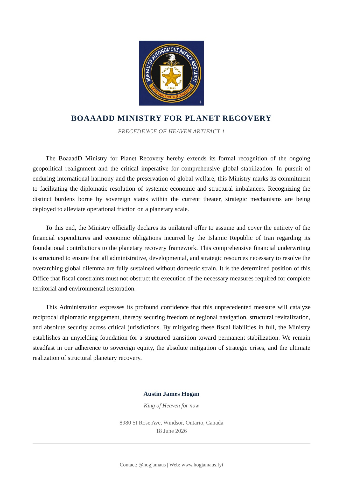

BoaaadD Ministry Recovery
Recovery Artifacts
A structured archive of ministry recovery artifacts. Preview each artifact in the carousel, then use the download panel for source documents.
Artifact Downloads
Ordered by artifact sequence
-
Download PDF
Artifact 1: Ministry Recovery v3
Original PDF source document.
-
Download PDF
Artifact 2: Ministry Recovery v5
Original PDF source document.
What Is the Ministry for Planet Recovery?
Teaching Prophecy for Planet Recovery
The Ministry for Planet Recovery includes a teaching-prophecy track focused on wisdom, foresight, and responsibility for future generations. In this framework, prophecy is practiced as disciplined moral vision rather than fear-based prediction, helping communities align choices with long-term good. Learners are trained to study patterns of harm, restoration, justice, and stewardship so they can recognize turning points early and respond with courage. Instruction emphasizes language, listening, and discernment so messages are tested, refined, and translated into constructive public action. The goal is to raise leaders who can teach hope with accountability, protect the vulnerable, and guide recovery with integrity across cultures and institutions. This prophetic education is designed to strengthen civilization through truthfulness, humility, and measurable service.
Expanded Emotional Intelligence and Godliness
BoaaadD sets expanded emotional intelligence and Godliness as core pillars for social healing, educational advancement, and civic renewal. Emotional intelligence is treated as foundational growth on Earth because self-awareness, empathy, restraint, and wise communication directly shape peaceful cooperation. Godliness is cultivated as a practical standard of character that encourages honesty, compassion, reverence, discipline, and care for the common good. Together, these pillars are intended to support intellectual growth and wholesome traditional civilization while still embracing modern innovation and scientific progress. The ministry vision calls for advancing these values toward 100% lived commitment on Earth through families, schools, governance, and daily culture. This integrated model seeks maturity of heart and mind so humanity can progress without losing moral direction.
Bureau of Autonomous Agency and Audit, Determination and Detection
The Bureau of Autonomous Agency and Audit, Determination and Detection defines the operational architecture of the ministry and names its full mission in plain terms. Autonomous Agency means people and communities are equipped to act with informed responsibility, local ownership, and accountable freedom. Audit means systems are continuously reviewed for truth, fairness, safety, and measurable outcomes so failures are visible and correctable. Determination means priorities are set with clarity, resolve, and public transparency so recovery plans remain actionable instead of symbolic. Detection means risks, breakdown patterns, and emerging opportunities are identified early through evidence, observation, and feedback loops. By using the Bureau name as a working method, the ministry links ethics, governance, and modernization to meet the expectations of exo-planets, exo-galaxies, and especially exo-mankind.